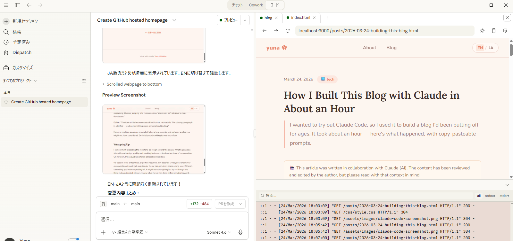

Background
AI-powered coding and autonomous agents have been getting a lot of attention lately. I wanted to quickly test how far I could get just by giving Claude instructions in plain language — so I used building my own blog homepage as the test case.
This article documents the prompts I used and the features that came out of it, for both developers and non-technical readers who are curious about AI tools.
Setup: From Zero to First Prompt
Getting started was simpler than I expected. Here's the full setup flow:
-
Install Claude
Download the Claude desktop app from claude.ai/download and sign in. -
Create a working directory
Make a folder anywhere on your machine — this is where Claude will create and manage your files. -
Tell Claude what you want
Just say it in plain language. Claude handled everything:git init, creating the GitHub repository, configuring GitHub Pages, and pushing the code — all without me running a single command myself.
No terminal experience required. The entire setup, from empty folder to live website, was driven by conversation.
What Got Built
After about an hour of back-and-forth, yuna-s.github.io was live. Here's what's included:
- Static blog hosted on GitHub Pages (free)
- Tag-based filtering — header tags, filter buttons, and sidebar all stay in sync
- Real-time search across titles, excerpts, and post body keywords
- English / Japanese language toggle, saved to browser storage
- Sidebar with search, tag cloud, recent posts, and stats
- Clean file structure:
css/,posts/,js/,assets/ - Working rules and knowledge docs for ongoing collaboration with Claude

Prompts Used (Copy-Paste Ready)
All instructions were in plain conversational language — English or Japanese both worked fine. The very first message was:
create my homepage which is hosting on github
Then I added context:
my name is yuna nishikino. blog page. About me and blogs, user name is yuna-s, style is warm and cute but clear
From there, features were added one by one through conversation:
"フォルダーを作成してpushして"→ organized file structure + deployed to GitHub"タグでフィルタリングする機能を付けて。右にも便利な機能つけて"→ tag filter + sidebar"英語と日本語対応にして"→ EN/JA language toggle"記事も日本語対応するようにして"→ bilingual post pages"本文の単語を検索しても出てこない"→ Claude diagnosed and fixed the search bug
Things I Noticed
Short prompts go further than you'd expect
"Warm and cute but clear" was enough to produce a consistent color palette, font choices, and layout. You don't need to spec everything in advance.
Debugging is included
When search wasn't working, Claude traced the problem on its own — a file:// protocol issue causing scripts to stop — and fixed it with a try-catch. No need to investigate errors myself.
It works around constraints thoughtfully
A static site can't do full-text search across separate files out of the box. Claude's solution: embed keywords as a data-content attribute on each post card, populated when the post is added. Practical and maintainable.
Tips: Ask Claude to Review as a Persona
One thing I found surprisingly useful: asking Claude to review content as a specific perspective. You just describe the viewpoint you want, and Claude gives feedback from that angle. I used this to improve this very article.
That said — AI-generated feedback is a starting point, not a final answer. Always read through the suggestions yourself and decide what actually fits your intent. The human review step matters.
Example personas
- Engineer perspective — focused on technical accuracy and completeness
- Non-technical / business perspective — cares about clarity and practical value
- Editor perspective — checks tone, consistency, and readability
The prompt is simple:
エンジニア視点と、技術に詳しくないビジネス担当者の視点でレビューして、より良い記事にアップデートして。最後に編集者として口調や内容を校正してもらって
Example feedback (condensed)
Below is an example of the kind of feedback Claude might return. Actual responses will vary — use them as prompts for your own judgment, not as definitive corrections.
Engineer: "The file:// protocol issue needs more context — readers may not understand why that causes scripts to fail. Also worth mentioning that try-catch is a standard JavaScript error-handling pattern."
Business perspective: "What is GitHub Pages exactly? I'd want one sentence explaining it before jumping into features. Also, 'static site' isn't obvious to non-developers."
Editor: "The tone shifts between casual and formal mid-article. The closing paragraph is a bit flat — end on something more personal and inviting."
Running multiple personas in parallel takes a few seconds and surfaces angles you might not have considered. Definitely worth adding to your workflow.
Wrapping Up
I came in half-expecting the results to be rough around the edges. What I got was a site with real design quality and working features — in about an hour of conversation. On my own, this would have taken at least several days.
No special tools or technical expertise required. Just describe what you want in your own words and you'll get surprisingly far. AI has genuinely come a long way. If there's something you've been putting off, it might be worth giving it a try — though one thing to keep in mind: always review what the AI has done before moving forward. The human check still matters. If you spot any mistakes or have questions, feel free to reach out. Thanks for reading! 🌸
はじめに
最近は AI を使ったコーディングや自律的に動作するエージェントが話題ですね。AI に言葉で指示するだけでどこまでできるか簡単に試したくて、Claude に「自分のブログ用ホームページを作る」をお題に検証してみることにしました。
この記事では、実際に使ったプロンプトと完成した機能を記録しています。技術的な経験がある方にも、AI に興味はあるけど詳しくない方にも、参考にしていただければ幸いです。
事前準備：最初の一言を打つまで
セットアップは思ったよりずっとシンプルでした。以下が全体の流れです。
-
Claude アプリをインストールする
claude.ai/download からデスクトップアプリをダウンロードして、サインインするだけです。 -
作業用フォルダを作成する
PC 上の好きな場所にフォルダを1つ作ります。Claude はそのフォルダの中でファイルを作成・管理してくれます。 -
やりたいことを話しかけるだけ
あとは日本語で伝えるだけ。git initの実行、GitHub リポジトリの作成、GitHub Pages の設定、コードの push まで、自分でコマンドを一切打つことなく Claude がすべて対応してくれました。
ターミナルの知識は不要です。空のフォルダから公開済みのウェブサイトまで、すべて会話だけで完結しました。
完成したもの
約1時間の会話で、このサイト（yuna-s.github.io）が完成しました。主な機能は以下のとおりです。
- GitHub Pages（無料）でホスティングされる静的ブログ
- タグによる記事フィルタリング（ページ上部・フィルターボタン・サイドバーが連動）
- タイトル・抜粋・本文キーワードを対象にしたリアルタイム検索
- 英語 / 日本語の切り替え（選択した言語はブラウザに記憶される）
- サイドバー：検索・タグ一覧・最近の投稿・記事数などの統計
- 整理されたフォルダ構成：
css/・posts/・js/・assets/ - Claude との作業ルールやナレッジをまとめたドキュメント
使ったプロンプト（コピペ用）
指示はすべて会話形式で、英語・日本語どちらでも問題ありませんでした。最初の一言はとてもシンプルでした。
create my homepage which is hosting on github
その後、名前・用途・スタイルをあわせて伝えました。
my name is yuna nishikino. blog page. About me and blogs, user name is yuna-s, style is warm and cute but clear
以降は会話しながら機能を追加していきました。主なリクエストは以下のとおりです。
「フォルダーを作成してpushして」→ ファイル構成の整理 ＋ GitHub への公開「タグでフィルタリングする機能を付けて。右にも便利な機能つけて」→ タグフィルター ＋ サイドバー追加「英語と日本語対応にして」→ 言語切り替え機能の実装「記事も日本語対応するようにして」→ 記事ページのバイリンガル化「本文の単語を検索しても出てこない」→ Claude が原因を特定して修正
やってみて気づいたこと
短い指示でも意図をくんでくれる
「warm and cute but clear」というスタイル指定だけで、カラーパレットからフォント選定まで一貫したデザインが出てきました。細かい仕様を事前に決めなくても、方向性さえ伝えればある程度動いてくれます。
不具合の特定・修正も自分でやってくれる
最初、検索機能がうまく動いていませんでした。Claude がコードを解析して原因を特定し、修正まで行ってくれました。
技術的な補足：原因は、ファイルを直接ブラウザで開く場合（file:// プロトコル）に一部のブラウザ API が制限され、スクリプト全体が止まっていたことでした。try-catch を追加して対応しています。
制約の中での工夫も一緒に考えてくれる
サーバーを持たない静的サイトでは、記事本文の全文検索を実現するのが難しいという制約があります。今回は、各記事カードにキーワードをあらかじめ埋め込む（data-content 属性）という方法で対応しました。「できないから諦める」ではなく、現実的な落とし所を一緒に探してくれるのが良かったです。
Tips：ペルソナにレビューさせる
試してみて意外と便利だったのが、「特定の視点でレビューして」とお願いする方法です。想定する読者や役割を伝えるだけで、その視点からのフィードバックをもらえます。この記事自体もこの方法でブラッシュアップしました。
ただし、AI のフィードバックはあくまで参考情報です。提案をそのまま採用するのではなく、内容が自分の意図に合っているかどうかを必ず自分で確認してください。人間によるレビューは欠かせません。
ペルソナの例
- エンジニア視点 — 技術的な正確さや説明の網羅性を重視
- 非エンジニア・ビジネス視点 — わかりやすさと実用的な価値を重視
- 編集者視点 — 口調の一貫性や読みやすさを確認
プロンプトの例です。
エンジニア視点と、技術に詳しくないビジネス担当者の視点でレビューして、より良い記事にアップデートして。最後に編集者として口調や内容を校正してもらって
フィードバックの例（抜粋）
以下は Claude が返してくれるフィードバックのイメージです。実際の回答は毎回異なります。提案はあくまで判断の参考として活用してください。
エンジニア：「file:// プロトコルでスクリプトが止まる理由の説明が不足している。try-catch が標準的なエラー処理パターンであることにも触れてほしい。」
ビジネス視点：「GitHub Pages が何なのか、一言説明がないと最初で詰まる。"静的サイト" という言葉も非エンジニアには伝わりにくい。」
編集者：「記事の途中で口調がカジュアルとフォーマルの間で揺れている。締めの段落がやや平坦なので、もう少し個人的なトーンで締めると良い。」
複数の視点を同時に依頼できるので、数秒で多角的なフィードバックが揃います。記事に限らず、仕様書や提案資料のチェックにも活用できます。
まとめ
「AI に頼んでもクオリティは低い」という先入観がありましたが、デザインも機能も想像以上のものができました。約1時間の会話で、自分だけでは少なくとも数日はかかりそうな作業が完了しました。
大がかりなツールや専門知識は不要です。やりたいことを言葉で伝えるだけで、かなりのところまで進められます。AIの進化はすごいですね。ずっと後回しにしてきたものがある方は、ぜひ一度試してみるといいかもしれません。しかし、人間がAIの実行内容を必ず確認した上で進めることが重要ですね。 誤りや補足があればお気軽にご連絡ください。ここまで読んでくださってありがとうございました🌸